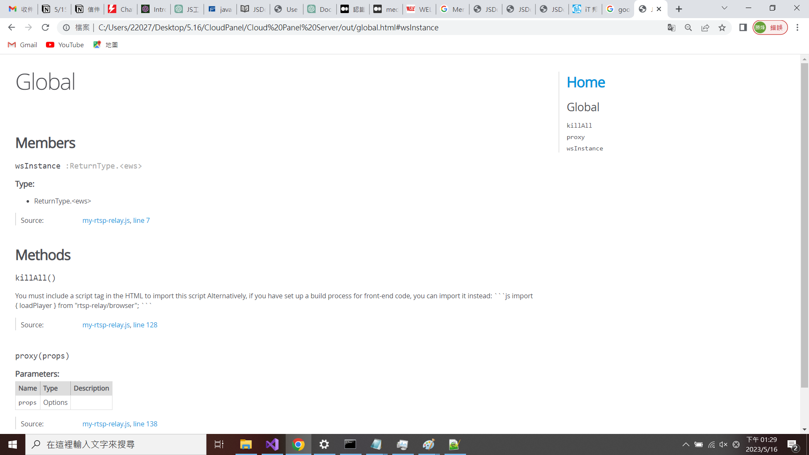

不需全域安裝JSDoc的方法
什麼是JSDoc
JSDoc 是透過註解可以自動生成網頁版的文件的套件
無法使用全域變數，解決方式
可以把它當作項目的依賴項來使用，這種方法的優點是，它不需要全局安裝 JSDoc，因此你可以在不同的項目中使用不同版本的 JSDoc。此外，任何下載你的項目的人都可以立即生成文檔，因為 JSDoc 是項目的一部分。
安裝JSDoc
因為換了使用者，所以權限從管理者變成使用者，所以無法直接加到環境變數裡，無法從命令列直接接執行 JSDoc，所以要先去要執行的文件夾裡
打開命令列輸入
裝完之後開啟
在package裡加上這行，目的是為了執行在根目錄下的routes 文件裡的js 程式，而docs可以當作當根目錄裡可執行的命令
接著打開命令列 輸入npm run docs
執行完後開啟out文件
打開index.html
顯示頁面如下
